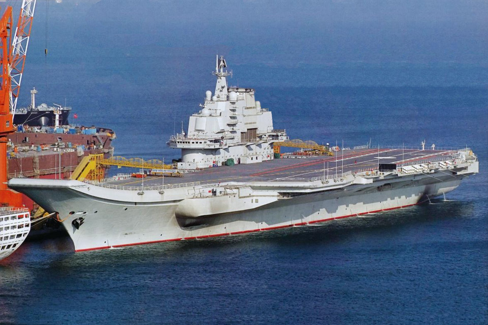
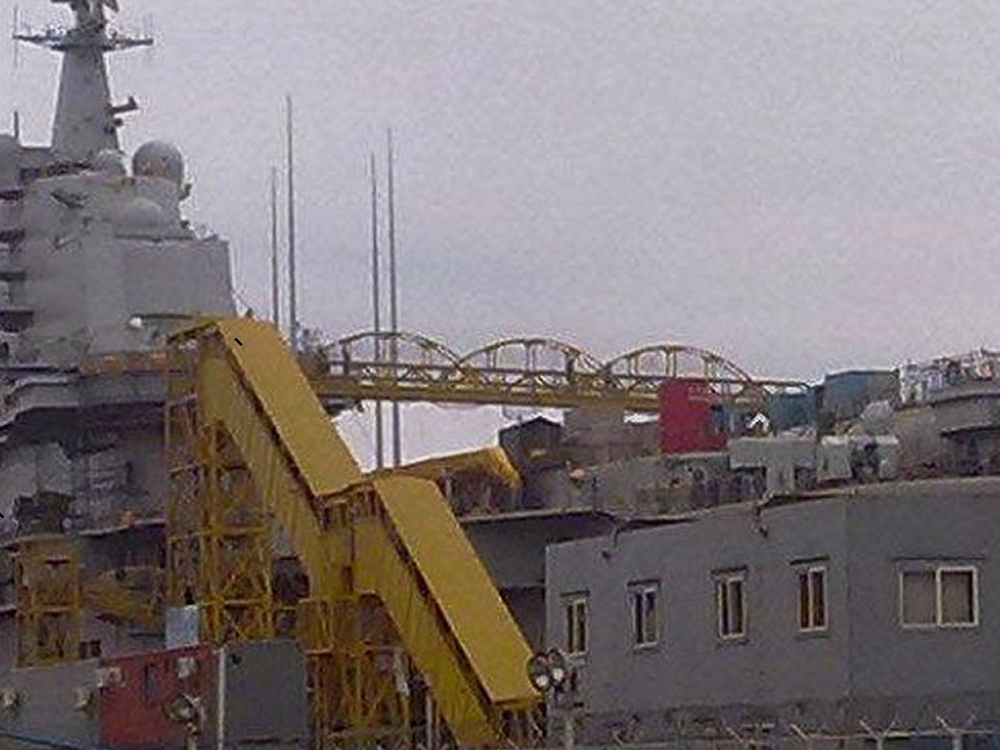
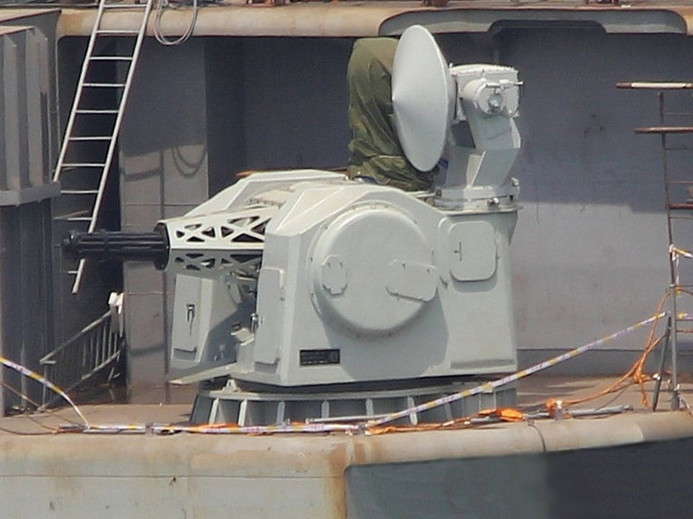
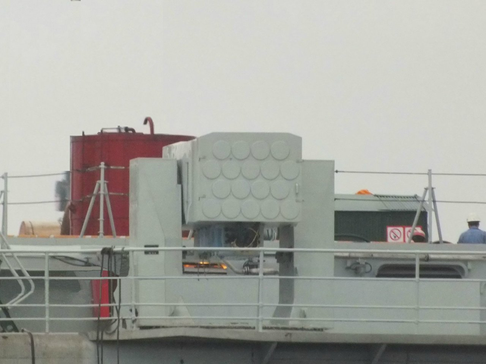
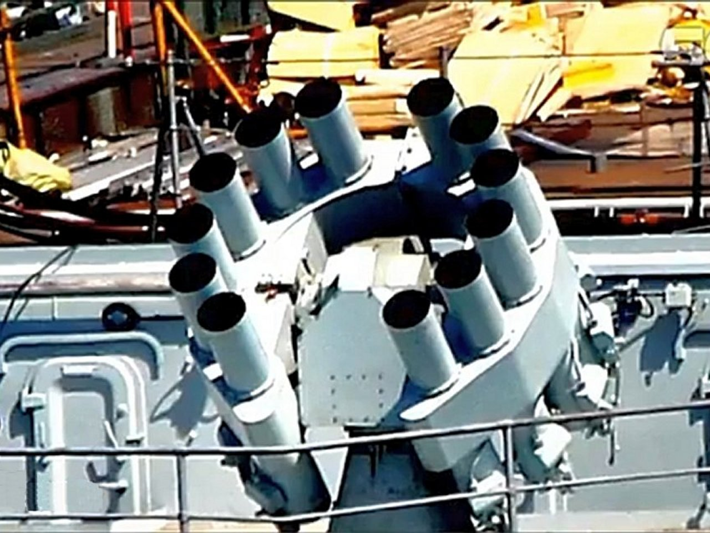

|
|
|

|
The new PLA (Chinese) Navy Aircraft Carrier, CV-16 (STOBAR) (The refurbished and refitted former Soviet Carrier Varyag)

Late in 2011, Trumpeter announced their new 1/350 scale model for the People's Republic Army Navy (PLAN) aircraft carrier that had been launched and undergone initial trials in August of 2011. Since I have been gathering 1/350 scale models to build Carrier Strike groups for the various nations that can deploy them, I was determined to buy it. I am a member of the US Naval institutie and the son of a father who was a US Navy combat officer in World War II in the PTO. I have been interested in naval matters my whole life. In addition, I have a web site where I have tracked the growth and modernization of the Chinese Navy for the past ten years called, The Rising Sea Dragon in Asia. One of the most visited pages on that site is my detailed tracking of this very carrier, since it was sold by the Ukraine to China and towed to the Chinese Naval Shipyards in Dahlian, I found it available first on eTamiya in China and placed the order only to find that they had not gotten them in yet and it had to be back ordered. I asked for a refund and they said they would give it to me, but then renigged and instead offered me an in-store credit. This is an expensive model and I was not happy. But it worked out okay because I used the credit later to buy the new 1/350 USS Iwo Jima, LHD-7, Wasp Class Amphibious Assault ship...a very sweet model but that will be a discussion for another day. As it was, Lucky Models in China advertised that they had it in stock and so I ordered it there and within a few days they shipped it to me. I received in in early February, one of the first purchases of the kit in the United States.
First of all, the box is large and has great graphics of the vessel (artist depiction) and the markings on the carrier and the contents. It is packed very well. Here it is with the box, the open box, and with the plastic sprues in their bags on our Queen sized bed: (Click on any of the following pics for a higher resolution pciture)   
Here's a better look at each bag. There are a total of thirty plastic sprues in 16 bags, the hull pieces, and a photo etch kit for detail metal parts. On the order of just under 1000 pieces for this model overall. Fine detail you come to expect from Trumpeter, with the full hull or water line version available. The upper hull is in a single piece and the lower hull is a single piece molded in red (I ended up painting it hull red) with the forward dome a seperate piece. Lots of finely detailed and small plastic parts for every sensor, weaponss system, chaff/decoy systems, antennae, sensors, life raft, and part that you can imagine. I was a little disppointed in that the bridge and flight control windows were not cut out and available as clear or smoked plastic, and that there was no hangar deck. If you want hangar spaces, you will have to scratch build them, which is what I did. Anyhow, here are the pics of the many detailed parts: The decal page is extensive to fully mark the vessel and the deck. The instructions are extensive. There is no official name or pennant number for the vessel yet. Numbers that are most likely are either "01" for their first carrier, or "83" for their next large training vessel which they may class her as for political purposes. But make no mistake, with the weapons outfit, and the Chinese J-15 Strike Fighters (which are modernized Chinese rebuilds of the Russian SU-33, this carrier will be fully operational and capable once the crew is trained up and the aircraft are embarked.               
This model is really a remake of the Trumpeter Russian Kuznetsov Carrier in 1/350 scale, which was the earlier sister ship of the Russian Varyag. The Varyag was left about 80% complete with the Ukraine when the Soviet Union fell apart and was never completed. She was later sold to China and towed there where she began her long refit and was ultimately launched as this vessel. There are a couple of sprues of Kuznetsov parts you will not use, and new PLAN parts for the Island, the weapons, the sensor fit, and for the aircraft, particularly the different Chinese helos used. The paint scheme is also quite a bit different, as are the deck markings.
The kit fits well together, but upon putting the larger portions together it became apparent that once I reached a point where they were to be glued, ample use of clamps and rubber bands would be required to hold the parts closely together and minimize gaps. In addition, there were several areas along the sponsons, particularly forward, where detail from the Kuznetsov had not been removed. Meaning they simply used the same mold from the Kuznetsov and you will have to remove those details. The largest removal involves sanding down the forward VLS missile silos on the Kuznetsov to smooth areas as they exist on the PLAN Carrier, which uses ther FN-3000L missile launcer and Type 1030 CIWS instead. This involved the use of my drimmel tool, grinding blocks and sand paper. There are other areas where similar removal was required for various antennae and other equipment mounts, as well as drilling to make way for Chinese antennae not in place on the Russian carrier.      
As you can see in the previous pics, I also began painting. The PLAN Carrier is a very light gray, so I used Light Gray from Master Models. For the flight deck, though the carton and the paint scheme shows the deck in a single color, the actual deck is painted in two colors. A medium gray for the non-landing strip (parking, movement, elevators, etc.) and a darker gray for the landing strip. I used Deck Gray for the non-landing areas and Engine Gray for the landing strip. Here are the finished initial deck paintings and the initial upper hull painting.   
So, the model came with no hangr spaces. I used the flat pieces meant for the waterline version bottom to create hanger spaces at each elevator. I sized them, cut them, glued them in place and then painted them as follows:   
  
 
 
Once the deck was attached, it was time to fill in any gaps between the deck joints and grind/Sand them down and repaint them. This was done with classic model putty in white, my dremmel tool, grind stones where necessary, and then sand papers of various grades as appropriate. I did the same to some areas around the elevators and sponsons where some gaps existed as well.   
 Picture of PLAN Carrier showing starboard forward sponson with both the Type 1030 CIWS and FL-3000N Missile launcher    The various weapons systems employed by the PLA Navy Carrier, the CIWS, the Missile launchers and the ASW Rocket launchers, as seen on the actual carrier There are many parts that go into the missile launchers, the CIWS, the ASW Rocket tubes, and the decoy/chaff launchers. Both plastic and photo etch. Be careful in cutting these away from the sprues because they are easily broken and mishandled. I completed all of the weapons and then added them to the sponsons in their correct positions, including the additional missile launcher.   
The Island for the PLA Navy Carrier is very detailed. One disappointment, unlike some of the other new Trumpeter models, the windows on the bridge and other control spaces (flight ops, etc.) were not cut out and there is no clear or smoked plastic windows available. I suspect this is because they did not want to have to create complete new tooling for the Kuznetsov carrier which they relied on heavily for this kit. So, I painted the windows in using Model Master's Weathered Black, which is a painstaking but gratifying and enjoyable experience. In addition, there are a lot of walk ways all around the island all the way up to the stack and the main mast where the sensors and main radar are located. The Gold Metal Model Kuznetsov photo etch kit with all of the various hand rails comes in handy here. More painstaking work. Many many small plastic parts for all of the antennae and sensors, and a lot of photo etch parts provided with the kit for supports, andtennae, and other pieces. I worked after work and on weekends for a couple of weeks to put the island together, but it was a very fun experience and came out well. I put the entire thing together from a structual standpoint without the main domes, mast or stack, and then painted it. I used Light Gray for the decks and housings, I used Brown for the fore and aft deck over the control rooms, white for the radomes, and then various metallic colors (steel, aluminum, silver, etc.) for the vents on the sides (steel), various sensors, and spotlights (silver). Then worked on the main mast and stack and got all of the antennae on and painted. I then added all of the domes and railing and then did a lot of touch up painting to finish it off. Ultimately final coats will be applied before and after decaling, with the final coat being a clear Dull coat from Model Master.         
Finally, placing the Island on the flight deck (though it was not glued yet), looks very nice. The carrier is taking great shape.
 
There was still a lot of work to be done with the main deck. Quite a bit of instrumentation and various equipment. All of the antennae, all of the life rafts and various ship's boats, and finally all of the hand railing for the sponsons, on various levels of the hull and on the deck itself, as well as the webbing. The boats, life rafts, instrumentation, antennae, webbing, netting, and handrails were made up of probably 300 or more pieces.
 
When these were complete, it took several days to attach them all and then painstakingly cut all of railings and nettings and attach them. Lots of touch up painting as I went. Some people install most of the parts and pieces and even handrailing before painting...I prefer to paint as I go, installing painted pieces and then touching up any necessary areas either from paint affected by the glue, or glue spots on the paint itself. Then it was time to attach the Island. The vessel itself still needs the rudders, props, shafs and supports, but otherwise is complete. I have yet to add the decals on the deck, and there are a lot of them which will be painstaking but very gratifying. Then, we'll build the air wing and deck vehicles and equipment, paint them, add decals, and place them. But for right now, she's looking pretty good.
       
There are many decals for the main deck landing and takeoff positions and the safety markings and parking spots. Some of these decals are long and the builder may be advised to cut some of the longer ones in two for placement without damage. As always, clean the surface well with water and mild soap or cleaner to ensure all oils are removed. A possible initial spray of gloss coat is possible, but I have had good experience without that and so just cleaned what I had already painted.
  
Then it was time to begin the landing area and take off area for the fixed wing aircraft.
  
Please note, that the deck has these markings etched into it, but many of the dashes and lines have small potrusions for detail. These need to be sanded, ground, or cut away so the decals will lay flat on the surface and avoid portrusions and deformation of the decals. I accomplished this with an exacto knife and sand paper and then repainting those areas effected.
  
With the deck markings and the detail thus far, it makes for some good looking close ups, for example, here's the Optical landing system along the outside edge of the deck. The railings and ladders are now all in place. 
Next is to finish the props, propellers, and rudders, and then the big job of building, painting and detailing the airwing. I intend to have ten J-15 fighters, four KA-27 ASW Helos, three KA-31 AEW Helos, two Z-9 transport helos, and two Z-8 SAR helos along with a full compliment of deck equipment on the deck and visible in the hangar or on the elevators.
Wow, the entire airwing has taken about as long as the rest of the ship put together. I had purchased some additional SU-33s to be painted and configured as J-15s and some extra helos. My airwing thus ended up being 14 J-15 fighters, 4 KA-28 ASW helos, 2 KA-31 AEW helos, 2 Z-9 ASW/SAR helos, and 3 Z-8 AEW, transport helos. That's 25 aircraft altogehter. The first part was to build them. The aircraft had 18 pieces each and so were a pretty good model themselves for each. The helos generally had 11 pieces each. So, for all of the aircraft, there were abpiut 350 pieces...many of them very small and delicate.
     
Then, painting the aircraft, finishing the smaller detail parts, and adding the decals for everything, and then the rotors for the helos was completed.
   
All of the above took almost 4 weeks to accomplish, working on it after work and on weekends when I could. We did have a five day break when I took a trip with my wife down to San Diego for one of our daughter's weddings which also gave me the opportunity to visit Naval Base Cornado and the anchorage across from there. So that added to the time. Now, for the PLAN Carrier, will come th eplacing of the aircraft on deck and the building and painting of the deck equipment...tow bars, fork lifts, pus trucks, carts, etc. And finally the paining and placement of the 1/350 scale personnel I have purchased. I expect the painting and placement of those very small individuals will take some time too.
Well, I finally got all the deck equipment and aircraft completed, flat clear coat on the aircraft and deck equipment, and the flat clear coat on the carrier with the air wing placed on deck, on the aft elevaor and in the hangar deck.
                
Now that the PRC, PLAN CV-16 Liaoning has been commissioned and in service for a number of months, I thought I would update the carrier to its latest configuration. This involved moving the anteennae from their original positions, keeping four forward, two on each side (port and starboard) and then moving all of the others along the starboard side of the flight deck. it also involved putting the new style, shadowed "16" pennant number on the front of the flight deck at the end of the ski jump, and just aft of the bow on the port and starboard sides of the vessel. Here is how she looks now as a commissioned Chinese aircraft carrier:
  
That's the completed Treumpter PRC, PLAN, CV-16, Liaoning Aircraft Carrier in 1/350 scale.
The completion of the PLAN Carrier group, centered on the already completed Trumpeter's 1/350 scale PLA Navy's Aircraft Carrier CV-16, Liaoning, (in addition ot the other escorts already completed) will incluide Mini Hobby's's PLAN Guangzhou, DDG-168; the PLAN Ningbo, DDG-139; and the PLAN ChangZhang5, SSN-405 by Hobby Boss. If a 1/350 scale model of the PLAN Type 071 LPD, Yuzhao Class, is added, I will add one of those, propbably LPD-999, Jinggangshan. The completion of the US Carrier Strike group, centered on the completed Tamyia's 1/350 scale USS Enterprise, CVN-65, (in addition ot the other escorts already completed) will include Trumpeter's USS Bunker Hill, CG-52 and USS Freedom, LCS-1 and Hobby Boss's USS Texas, SSN-775. (All of which I already own). When a 1/350 scale USS Enterprise, CVN-80 (or any Gerald R. Ford Class) comes out from Trumpeter, Airfix, Tamiya, Dragon, or whomever else, I will add it to this group along with another AEGIS Cruiser. Whatever Ford Class coms out, I will build her as the USS Enterprise, CVN-80. The UK Group will indlude the Airfix 1/350 scale HMS Illustrious (which I already own), two Airfix 1/350 scale Daring Class DDGs (which I own and should arrive in January 2013), two Trumpeter 1/350 scale Type 23 HMS Duke class Frigates (which I already own), and the Hobby Boss 1/350 scale HMS Astute SSN and Airfix 1/350 scale HMS Tragalgar SSN, both of which which I already own. One day, when a 1/350 scale HMS Queen Elizabeth carrier and a 1/350 HMS Ocean LPD come out, I will add both to this group. The French CSG will be centered on Heller's 1/400 scale Charles De Gualle (which I already own). I have purchased 1/400 scale Heller French De Grasse, D612 DDG, which is an ASW DDG, the French Duquesne, D603 DDG which is an anti-air multi-purpose DDG, and the French Aconit F713 FFG and Gueprattet F714 FFGs, both of which are Lafayette class frigates. These five vessels will round out my French CSG. As soon as a French Robin class nuclear sub, like the French Perale S606 SSN comes out, I will add that to the group. Also as soon as the Forbin D620, Horizon class anti-air DDG is available, I will purchase it and add it to the group as well. The Japanese JMSDF group will be centered on Fujimi's very finely detailed, 1/350 scale Hyuga, DDH-181, which I own. It will be escorted by Trumpeter's 1/350 scale DDG-177, Atago, an AEGIS class DDG (which I have purchased), Trumpeters's 1/350 scale DDG-114 Susunami (A Tachanami Class DDG which I own), and by the 1/350 scale SS-503 Hakuryu (which I own), one of Japans new, very modern and capable AIP Diesel Electric submarines. As soo as a DDG-115 Akizuki in 1/350 scale becomes available, I will add it to this group. The completion of the US ARG will include Tamiya's 1/350 scale, USS Iowa, BB-62 (which I have already completed), Trumpeter's 1/350 scale USS Iwo Jima LHD-7, Gallery's 1/350 scale USS Sommerset, LPD-25, and Trumpeter's 1/350 scale USS The Sullivans DDG-68, Then, finally it will be a complete Russian CSG (centered on Trumpeter's Kuznetsov which is available but I have not purchased yet) the Russian Slava Class cruiser, Varyag by Trumperter (which I own), two Trumpeter 1/350 scale Udalaoy DDGs (which I own), Hobby Boss's Akula II class SSN (which I own), and the Russian Alfa Class SSN, which I have already completed. Recently I purchased Heller's 1/400 scale Foch, the Clemceau Class carrier that was sold to the Brazilians in 2000 and in 2002 was refitted and bacame the Brazilian CV, Sao Paulo, using steam catapaults. I will build the model as the Sao Paulo and thus start a Brazilian group, though the Type 22 DDGs and the FFGs the Brazilians use are not available at present. Then, again, once the models are available, I'd like to build an Italian Group centered on the Cavour and their Horizon DDGs, a Spanish Group centered on the Juan Carlos and their F-100 AEGIS FFGs, and ultimatly an Australian Group centered on the new Canberra Class LPD and the Hobart class AEGIS DDGs. If they ever build the models, an Indian group centered on either the Vikramaditya or their new ADS Carrier the Vikrant and their Kolkata class DDGs and Shivlak class FFGs would also be nice. You can see all of these actual carriers, read their histories and specifictions at my site: ...and most of their surface escorts at: AEGIS AND AEGIS-LIKE VESSELS OF THE WORLD
|


FINE ALL-AMERICAN, LIBERTY ORIENTED BOOKS AUTHORED BY JEFF HEAD
 Dragon's Fury - World War Against America and the West: Following great success in the War on Terror, politicians and analysts alike thought that future global conflict was impossible...but they were wrong. Journey into a possible future where Islamic terrorists sharpen their horrific skills & ally with Red China. In such a future, can the U.S. & western civilization survive? |
 The Stand at Klamatjh Falls: How rural western farmers and their supporters stood up to entrenched environmentalism, activist judges, and agencies of the Federal gGovernment in southwestern Oregon...and prevailed. |
BACK TO JEFFHEAD.COM
Copyright © 2012 by Jeff Head, All Rights Reserved